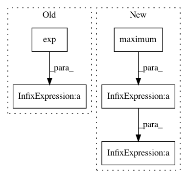

0f37cc721b24c9c72b7940d23e65b6f22ad451c4,GPy/kern/_src/rbf_psi_comp/ssrbf_psi_comp.py,,_psi2computations,#Any#Any#Any#Any#Any#Any#,61
Before Change
_psi2_common = gamma[:,None,None,:]/(lengthscale2 * _psi2_denom * _psi2_denom_sqrt) // Nx1x1xQ
_psi2_exponent1 = -_psi2_Zdist_sq -_psi2_mudist_sq -0.5*np.log(_psi2_denom)+np.log(gamma[:,None,None,:]) //N,M,M,Q
_psi2_exponent2 = np.log(1.-gamma[:,None,None,:]) - 0.5*(_psi2_Z_sq_sum) // NxMxMxQ
_psi2_exponent = np.log(np.exp(_psi2_exponent1) + np.exp(_psi2_exponent2))
_psi2_exp_sum = _psi2_exponent.sum(axis=-1) //NxM
_psi2_q = np.square(variance) * np.exp(_psi2_exp_sum[:,:,:,None]-_psi2_exponent) // NxMxMxQ
_psi2_exp_dist_sq = np.exp(-_psi2_Zdist_sq -_psi2_mudist_sq) // NxMxMxQ
After Change
_psi2_common = gamma[:,None,None,:]/(lengthscale2 * _psi2_denom * _psi2_denom_sqrt) // Nx1x1xQ
_psi2_exponent1 = -_psi2_Zdist_sq -_psi2_mudist_sq -0.5*np.log(_psi2_denom)+np.log(gamma[:,None,None,:]) //N,M,M,Q
_psi2_exponent2 = np.log(1.-gamma[:,None,None,:]) - 0.5*(_psi2_Z_sq_sum) // NxMxMxQ
_psi2_exponent_max = np.maximum(_psi2_exponent1, _psi2_exponent2)
_psi2_exponent = _psi2_exponent_max+np.log(np.exp(_psi2_exponent1-_psi2_exponent_max) + np.exp(_psi2_exponent2-_psi2_exponent_max))
_psi2_exp_sum = _psi2_exponent.sum(axis=-1) //NxM
_psi2_q = np.square(variance) * np.exp(_psi2_exp_sum[:,:,:,None]-_psi2_exponent) // NxMxMxQ
_psi2_exp_dist_sq = np.exp(-_psi2_Zdist_sq -_psi2_mudist_sq) // NxMxMxQ
In pattern: SUPERPATTERN
Frequency: 3
Non-data size: 5
Instances
Project Name: SheffieldML/GPy
Commit Name: 0f37cc721b24c9c72b7940d23e65b6f22ad451c4
Time: 2014-03-04
Author: z.dai@shef.ac.uk
File Name: GPy/kern/_src/rbf_psi_comp/ssrbf_psi_comp.py
Class Name:
Method Name: _psi2computations
Project Name: SheffieldML/GPy
Commit Name: 0f37cc721b24c9c72b7940d23e65b6f22ad451c4
Time: 2014-03-04
Author: z.dai@shef.ac.uk
File Name: GPy/kern/_src/rbf_psi_comp/ssrbf_psi_comp.py
Class Name:
Method Name: _psi1computations
Project Name: mozilla/TTS
Commit Name: e2d974e8be89cdbf7bfae6ed39ebe807e8033863
Time: 2018-04-17
Author: egolge@mozilla.com
File Name: utils/audio.py
Class Name: AudioProcessor
Method Name: _griffin_lim